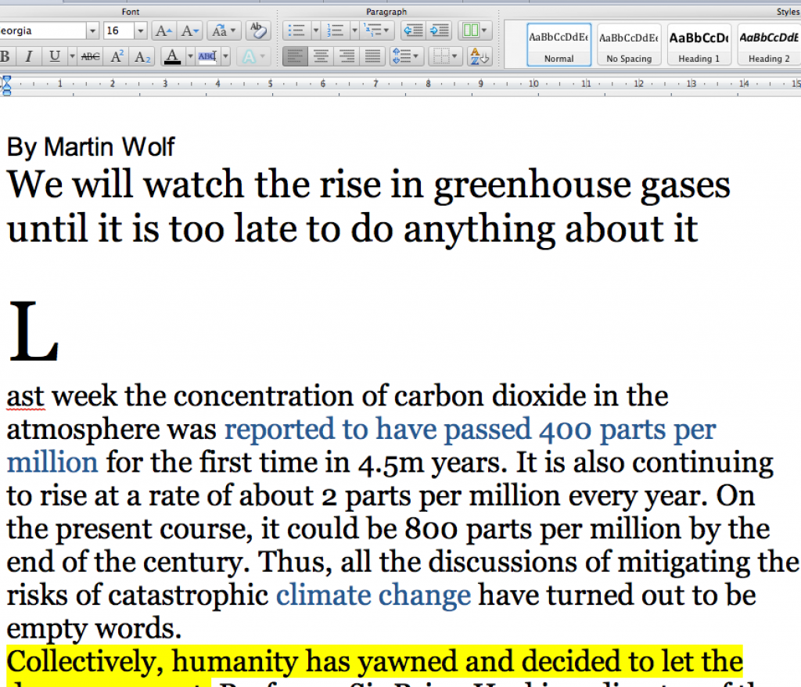
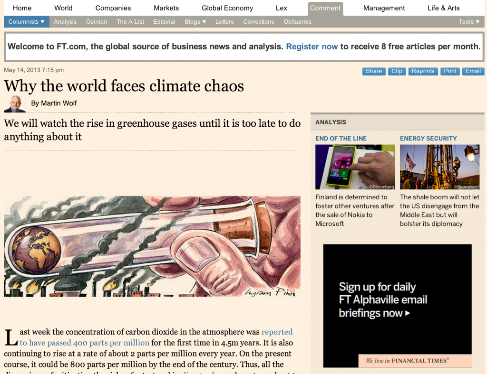
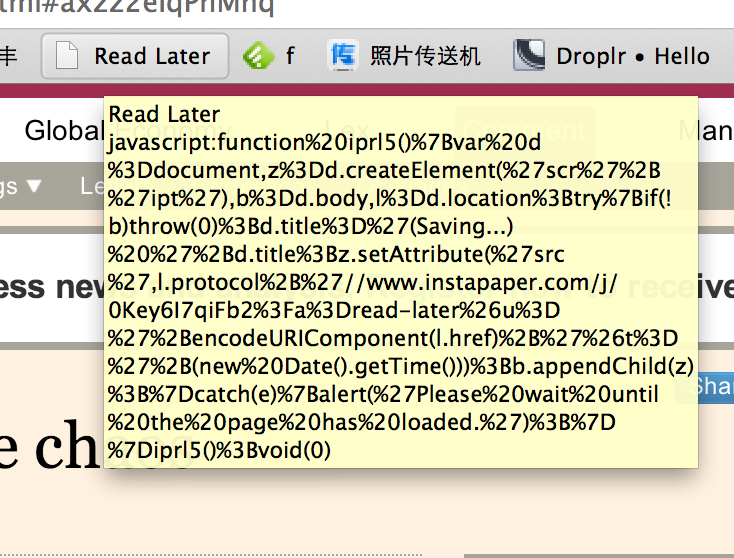
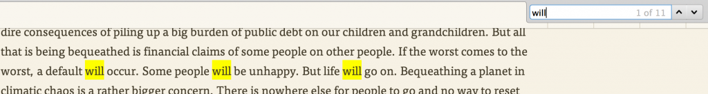
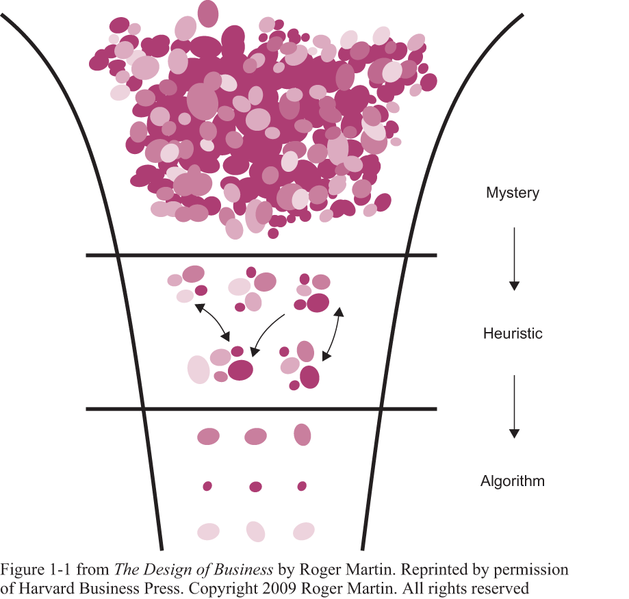

晚上阅读、白天吵架”是美国大学教育的一种典型模式，通过大量的阅读获得足够的知识广度，在争执和表达观点中利用其中被沉淀的知识，并在最短时间里完成知识从概念到运用。
有同学也遇到了这样的问题，无法快速阅读，并完成知识的转化，这篇文章是给同学一些快速阅读的经验的。
好的阅读环境
字体和间距对于阅读的影响很大，页面周边的干扰也会对阅读产生不好的影响，往往教授给你的要么是网页，要么是word文档，都不是很好的阅读格式，我建议是找到这篇文章的网页版，使用像instapaper这样的插件工具，制造一个更好的阅读体验，不再有广告的干扰，也可以使用更好的字体和节奏，完全关注文章内容本身。

教授发来的word文档

在网上找到原文

使用instapaper后的显示效果

注册instapper之后，只要在收藏栏上放一个收藏链接就可以轻松收藏这些文章
再考虑到instapaper可以和移动设备同步，便可以使用碎片时间进行阅读，是一个很好的工具可以尝试。
别着急开始
英文是很信息效率很低的语言，也很口语化，大部分作者完全按照自己说话的方式进行行文，因此马上进行阅读效率并不高，我们可以先从一些我称作“Structure Content”的内容开始阅读，例如：标题、副标题、章节标题、结语、引用、每段开头和结尾，通过大概感觉这些“Structure Content”大概能够体会作者在讲什么。
我们找到一篇FT.com上的文章做例子，这一篇也是这位同学阅读计划中的一篇。文章在这里：http://www.ft.com/intl/cms/s/0/c926f6e8-bbf9-11e2-a4b4-00144feab7de.html#axzz2eIqPnMnq
我们拿instapaper打开来，看看有哪些结构化的内容：
标题
Why the world faces climate chaos，通过阅读这个标题，你就能大概感觉出他行文的逻辑，首先，告诉你现在是climate chaos，然后告诉你why
单行短句
该篇文章没有分章节，也没有章节标题，但是他使用一些单行的短句来表达段落大意，比如：climate change have turned out to be empty words。我们把所有这种句子列出来：
- climate change have turned out to be empty words
- So why are we behaving like this?
你看，第一个表达的就是climate chaos(empty words)，第二个表达就是why，你现在已经证实了你的假设，就是这个逻辑。
每段首句
下一个步骤是只看每段的首句，我们把每段的首句挑选出来，这里有个技巧，最多一行，另外，延续性的段落跳过，比如例子中的第3段和第4段。我们看看会发生什么：
- We will watch the rise in greenhouse gases
- Last week the concentration of carbon dioxide
- Collectively, humanity has yawned and decided to let the dangers mount
- What makes the inaction more remarkable
- So why
- The first and deepest reason is that
- A second reason is
- A third reason may be
- A fourth is a
- A fifth is the
- A sixth is indifference
- A final (and related) reason
- The more one thinks about the challenge,
- So what might shift such a course?
- Most people believe today that a low-carbon economy
- Neither the technological nor the institutional conditions
列举这些，你就能大概看出一个思路了，温室效应正在增加，人们应对无力，为什么呢，有7个，外加一个，怎么改变？
别着急进入细节，我们进入下一个层次。
重要的肯定句
我不喜欢打印出来读的原因是"too heavy"，当我们打印出来，我们就把阅读当成一种特别正式的事情，事实上大部分阅读都应该是随意的，此外，搜索功能也是on-print的阅读所缺少的。
一篇文章中其实最重要的是那些非常强烈的肯定句，使用搜索功能我们可以很容易的找到这些强烈的肯定句，比如说，搜索“will”，我们来试一试，把所有“will”句子列出来，还是一样，最多一行：
- We will watch the rise in greenhouse gases
- If the worst comes to the worst, a default will occur
- Some people will be unhappy. But life will go on
- human ingenuity will find some clever ways of managing the worst results
- We will, instead, watch the rise in global concentrations
- it will by then be far too late to do anything much about it.
- People will not do something on this scale
- They will never accept such a situation
- there is no political will to do anything real about the process
很简单CMD+F
再试一试“must” -
- Substantial resources must be invested
- institutions must also be developed that can deliver it
- we must start by offering humanity a far better future
从这些句子我们就可以看出作者的一些观点，现在不好，我们需要从机构和技术的层次去产生新的动作，去影响低碳生活。
仔细读最后三段
最后三段往往是整个文章的灵魂，稍微认真地读最后三段，就可以把握整个文章的脉络，这里的技巧是，一旦发现某句不在灵魂之上，就跳过。通过读最后三段我们就可以找到整个文章的精髓句子，比如：
- Most people believe today that a low-carbon economy would be one of universal privation
- a politically sellable vision of a prosperous low-carbon economy…is not what people now see…
- Neither the technological nor the institutional conditions exist at present…
- In their absence, there is no political will to do anything real about the process driving our experiment with the climate.
- But there is, predictably, no effective action
到这里基本上整篇文章的脉络就已经很清楚了，我们缺乏的是科研机构持续投入产生的"a political sellable vision of a prosperous low-carbon economy"，这个就是作者的观点。
A necessary, albeit not sufficient condition, then, is a politically sellable vision of a prosperous low-carbon economy. That is not what people now see. Substantial resources must be invested in the technologies that would credibly deliver such a future.
不需要读所有东西
事实上我认为到这里，这篇文章就可以读完了，所有的阅读任务本质，应该是寻找一系列的碎片，这些碎片让你逐渐形成观点，我想教授希望你收集的是碎片，而不是别人的观点，更重要的是形成自己的观点。
那么这篇文章你可以得到什么碎片呢？
读文章不是翻译
切勿把读文章当成翻译去进行，阅读和翻译有着本质的区别，前者是形成你自己的观点，后者是将语言转化成另外一种形式表达，因此不需要纠结于某个词，非要把所有词搞懂意思，阅读不是增加词汇量的好工具，写作才是，因为学会用和知道意思有着天壤之别。
不要怕
阅读就像喝水吃饭一样是稀松平常的事情，没有必要担忧：我理解错了怎么办？我会不会太草率了？我会不会读不懂？不一定非要抱着“一定有有价值的观点，只是我还不够强找到”的思想，放轻松，我认为这些文章教授也许就是看看标题就给你们推荐，真正精读后推荐的文章，极少极少。
做一些小练习
这样的阅读习惯有点“anti好孩子”，读书的时候，我看到最会读书的女生，会把阅读材料中所有陌生单词标出来，记上音标和中文意思，这是他们的方式，她们会鄙视我这种“看起来有些功利”的方法，但是我要说的是，知识在你第一次用之前，价值完全为0，因此需要做的是尽可能快的用这些知识，而不是盲目积累这些“价值为0”的知识。
那么跟我一起做做练习吧，随意选择一篇文章，做以下事情：
- 把标题、副标题、段落名等“结构性内容”列出来；
- 把所有强烈肯定语气的句子找出来（如含有must, will, my view is）
- 从最后3段中找出精华句子
- 从中提炼出一个微博，发出来
写在最后
我发现，我其实并不喜欢读书，我不像那些很厉害的人，每年可以读上百本书，对我来说，这跟评价程序员水平按照代码行数来评价一样，意义并不大，就像我说的，积累那些“还不是你的”知识，还不如把重点放在“证实这是你的知识”。
你会慢慢发现，这其实就是Design Thinking中知识漏斗（Knowledge Funnel）的思维，在Mystery（神秘）中不断（更快地）寻找Heuristic（启发）最后变成Algorithm（算法） ——更快的阅读，更快的产生启发，更快的变成“我的知识”。

希望这些能给你提供一些帮助。